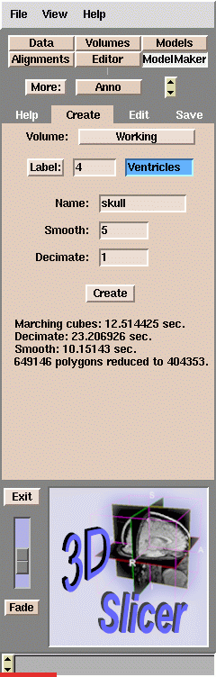

The input to the create model interface is labelmap data that has been created with the 3D slicer's editing tools. In this case we have segmented a skull with the threshold feature.

The create mode interface is very straight forward. Select the working volume and the label value to make the model from. Here all voxels labelled 4 or color blue, will be included in the resulting model. In most cases, it is only necessary to hit the create button.

The model above was generated from the segmented skull above by simply hitting the create button.